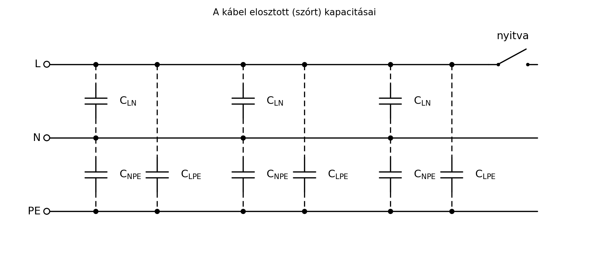

Amikor egy mosógép motorja zúg, de nem indul el, a szerelő gyakran az indítókondenzátorra gondol. Amikor egy régi villanyborotva vagy tápegység burkolatán figyelmeztetés van, hogy a kondenzátor feltöltve maradhat, az áramütés kockázata valós. A kondenzátor az energiát villamos térben tároló elem; a kapacitás fogalma és a villamos tér alaptörvényei nélkül nem értjük, miért tárol energiát, miért kell kisütni, és hogyan kell kiválasztani indító- vagy fázisjavító kondenzátort. Ez az alfejezet a villamos tér alapjait, a Coulomb-törvényt, a térerősséget, az átütést és a csúcshatást, valamint a kondenzátor kapacitását és energiáját építi fel, hogy később az RC-köröket, az indítókondenzátorokat és a fázisjavítást is szakszerűen kezeld.
Képzelj el két, egymással párhuzamos fémlemezt, közöttük vékony műanyag szigetelőréteget. Ha a lemezek közé feszültséget kapcsolunk, az egyik lemezen elektronhiány (pozitív töltés), a másikon elektrontöbblet (negatív töltés) alakul ki. A lemezek között villamos tér (elektromos mező) jön létre, és a szerkezet energia tárolására válik képessé: ez a síkkondenzátor. A kapacitás azt fejezi ki, hogy adott feszültség mellett mekkora töltést tud felhalmozni; a tárolt energia a feszültség négyzetével nő, ahogy az alábbi ábrán is látszik.
Az ábrán a kapacitású kondenzátor tárolt energiáját látjuk a feszültség függvényében. -on csak , -on már energia tárolódik: ezért a feltöltött kondenzátor akkor is balesetveszélyes lehet, ha az áramkör már le van kapcsolva.
A villamos tér a töltések közötti erőhatást közvetítő fizikai mező. Az alapösszefüggést Coulomb-törvénynek nevezzük.
Törvény. Két pontszerű töltés között ható erő arányos a töltések szorzatával és fordítottan arányos a távolságuk négyzetével:
ahol az erő (), , a töltések (), a távolság (), , és a vákuum permittivitása.
Az azonos nemű töltések taszítják, a különbözők vonzzák egymást.
Definíció. A villamos térerősség () megadja, hogy a tér egy pontjában egységnyi pozitív töltésre mekkora erő hat:
mértékegysége (volt/méter), ami ugyanaz, mint . Ponttöltés terében a térerősség nagysága:
Homogén (egyenletes) térben, például két nagy, párhuzamos lemez között a térerősség a lemezek közötti feszültségből és távolságból számítható:
ahol a lemezek közötti feszültség (), a lemezek távolsága (). Ez a feszültség–térerősség kapcsolat az átütés és a csúcshatás megértésének kulcsa.
Számítás. , .
Ez az érték közel van a száraz levegő kb. átütési szilárdságához (ellenőrizendő: az átütési értékek anyag- és környezetfüggők).
Az alábbi ábra ugyanezt a lemezpárt mutatja: (a) sima lemezek között a térvonalak párhuzamosak és egyenközűek, a tér homogén, ; (b) ha az alsó lemez szélén sorja áll ki, a térvonalak a csúcsára sűrűsödnek, ott a térerősség a 2 kV/mm többszöröse, így ott indulhat meg először az átütés (csúcshatás); (c) a zárt fémdoboz burkolatán végződnek a térvonalak, a belsejében nincs tér (árnyékolás, lásd a következő szakaszt). A térvonalak sűrűsége a térerősséggel arányos.

A villamos térben több, a gyakorlatban fontos jelenséget kell ismerni.
Átütés. Ha a térerősség egy szigetelőanyagban meghaladja az anyag átütési szilárdságát, a szigetelő elveszíti szigetelő képességét, és villamos kisülés (ív, szikra) jön létre. A levegő átütése villanyszerelőként fontos: nagy térerősségnél a levegő vezetővé válik. Száraz levegőben az átütési szilárdság kb. , de nedvesség, por, éles felületek vagy csökkent nyomás jelentősen csökkentheti (ellenőrizendő: konkrét anyagjellemző).
Csúcshatás. Éles csúcsok, sorja, hegyes vezetékvégek közelében a térerősség lokálisan sokkal nagyobb lehet, mint a sima felületeknél, mert a töltések sűrűbben helyezkednek el. Emiatt a csúcsoknál könnyebben indul meg a szikra vagy a koronakisülés. A szerelői gyakorlatban ezért kerüljük a lecsiszolatlan éles kábelvégződéseket, sorját, éles kábelsaru-sarkot a nagyfeszültségű vagy nagy térerősségű helyeken. A villámhárító felfogója ezzel szemben a környezeténél magasabb, földelt vezető, amely a becsapást saját magára tereli; a felfogók elhelyezését az MSZ EN 62305 sorozat szerinti módszerek (gördülő gömb, védőszög, háló) határozzák meg, nem a csúcs hegyessége (ellenőrizendő: MSZ EN 62305-3).
Megoszlás. Ha egy töltött testet egy vezetőhöz közelítünk, a vezetőben a töltések elmozdulnak, így a vezető közelebbi vége ellentétes, távolabbi vége azonos előjelű töltésűvé válik. Ez a jelenség a megoszlás (influencia), és alapja a kapacitív csatolásnak, az árnyékolásnak és a vezetékek közötti áthallásnak. Ennek gyakorlati következménye, hogy egy lekapcsolt ér, amely egy feszültség alatt álló vezeték mellett fut, a nagy belső ellenállású műszeren „fantomfeszültséget” mutathat; ezért a feszültségmentesség ellenőrzésére kétpólusú feszültségvizsgálót használunk (MSZ EN 61243-3).
Árnyékolás. A zárt fémburkolat (Faraday-kalitka) belsejét a külső villamos tér nem hatolja át, mert a fémben szabadon elmozduló töltések elrendeződése leárnyékolja a teret. Ezért a kényes vezetékeket fém csőben vagy árnyékolt (fóliás vagy fonott árnyékolású, egy ponton földelt) kábellel óvják; a sodrott érpár ezzel szemben nem árnyékol, hanem a mágneses zavarok hatását csökkenti: két erének hurkai felváltva ellentétes irányban fogják át a külső változó fluxust, ezért a bennük indukált zavarfeszültségek nagyrészt kioltják egymást (az indukció alapjait lásd: Elektromágneses indukció, önindukció és az RL-tag). A kapcsolószekrény fém burkolata is csökkenti a külső villamos zavarokat.
Definíció. A kondenzátor kapacitása () megadja, hogy adott feszültség mellett mekkora töltést tárol:
mértékegysége a farad, jele . A gyakorlatban a mikrofarad (), nanofarad () és pikofarad () egységeket használjuk.
A síkkondenzátor kapacitása a geometriából és a szigetelőanyagból:
ahol: - a lemezek hatásos felülete (), - a lemezek távolsága (), - a vákuum permittivitása, - a szigetelőanyag relatív dielektromos állandója (más néven relatív permittivitás).
A azt mutatja, hogy az adott anyag mennyire növeli a kapacitást a vákuumhoz képest. Levegőben kb. , műanyagfóliáknál , papírnál , kerámiáknál is lehet (ellenőrizendő: konkrét anyagadatok gyártói táblázatból). A nagyobb tehát kisebb méret mellett is nagyobb kapacitást eredményez.
Szabály. A kapacitás a lemezek felületével arányos, a lemeztávolsággal fordítottan arányos, és a dielektrikum tulajdonságaitól is függ. A távolság csökkentése növeli a kapacitást, de növeli az átütés kockázatát is, mert azonos feszültség mellett nő a térerősség.
A kondenzátor töltésekor munkát kell végezni a többlettöltések felhalmozásához. Ez a munka a kondenzátor villamos terének energiájaként tárolódik:
ahol az energia (), a kapacitás (), a feszültség (), a töltés ().
Indoklás (vázlat). A töltés feszültségfüggése lineáris: . A töltés kis lépésekben való felvitele során a pillanatnyi feszültség arányos a már felvitt töltéssel, ezért az átlagos feszültség az üres és a végfeszültség átlaga: . A teljes munka tehát .
Figyelem. A tárolt energia a feszültség négyzetével nő: ha a feszültséget kétszerezed, az energia négyszeres lesz. Egy -ra feltöltött nagy kapacitású kondenzátor kikapcsolás után percekig is életveszélyes áramot adhat le, ezért csak szakszerű kisütés után szabad megérinteni.
A szerelő a kapacitással leggyakrabban nem alkatrészként találkozik. Egy kábelben két, egymás mellett futó réz ér, köztük PVC vagy XLPE szigetelés: ez egy hosszú, „feltekert” kondenzátor. Ugyanilyen kapacitás van minden ér és a védővezető, illetve a föld között. A kapacitás a hosszal arányos, ezért hosszegységre adják meg; tanulási nagyságrend néhány tíz, kb. 100–200 pF/m erenként, a kábel típusától függően (ellenőrizendő: gyártói adatlap). Ezt a kapacitást nem lehet kiszerelni, és ugyanúgy töltődik, mint bármely kondenzátor.

A szerelői gyakorlatban a következő főbb típusokkal találkozunk.
Fóliakondenzátor. Két fémfólia között vékony műanyag fólia (poliészter, polipropilén). Nagy feszültségre, váltakozó áramra is alkalmas; öngyógyuló változata is van. Jellemző a motor futókondenzátora és a fázisjavító kondenzátor.
Kerámia kondenzátor. Kis kapacitású, olcsó, nagy frekvencián jó. Tápegységeknél, szűrőáramköröknél, elektronikában használják. Egyes típusai a hőmérsékletre nagyon érzékenyek.
Elektrolitkondenzátor. Nagy kapacitás, de polarizált (a rákapcsolt feszültség polaritása számít), és élettartamát a meleg és a túlfeszültség jelentősen csökkenti. Egyenáramú tápegységek szűrésére, pufferkondenzátorként használják. Létezik bipoláris (nem polarizált, AC) változata is: ez a nagy kapacitású, csak rövid ideig bekapcsolt motor-indítókondenzátor; tartós üzemre nem alkalmas (ellenőrizendő: gyártói adatlap, üzemidő-arány).
Szuperkondenzátor (EDLC). Nagy kapacitás, energiatárolásra alkalmas, például memóriatartalék, rövid idejű szünetmentes támasz (ellenőrizendő: pontos típusadatok).
Motor indító- és futókondenzátor. Az egyfázisú aszinkron motoroknál indító nyomatékot és forgómezőt biztosít; tipikus névleges feszültsége , kapacitása néhány -tól néhányszor -ig (ellenőrizendő: gyártói adatlap). Bekötéskor tartsuk be a motor kapocstábláját és a kondenzátor kapcsolási rajzát. A teljes folyamattal a Motor kapocsbekötése és beüzemelése alfejezet foglalkozik.
Fázisjavító kondenzátor. Háromfázisú hálózaton a meddőteljesítmény kompenzálására használják, hogy a értéke javuljon. Az elosztóhálózatokban külön lépcsőkben kapcsolják, és méretét a meddőteljesítmény () alapján választják ki. A kondenzátort a fogyasztóval (vagy a fogyasztókat tápláló gyűjtősínnel) párhuzamosan kötik be, így a fogyasztó feszültsége nem változik, csak a hálózatból felvett meddőáram csökken. Erről a Fázisjavítás méretezése alfejezet ad részletes eljárást.
A felsorolt típusok belseje ugyanazt a síkkondenzátort valósítja meg: két vezető fegyverzet és köztük a dielektrikum. Az alábbi ábrán a fóliakondenzátornál (a) a két fémezett műanyag fóliát (2) tekercsbe csévélik, a homlokfelületre fémet szórnak (1), és ide hegesztik a kivezetést. Az elektrolitkondenzátorban (b) az elektrolitba itatott tekercs (3) alumíniumházban van; a házon a „−” csík (4) jelöli a negatív kivezetést, a hosszabb láb a pozitív (6), a tetőn lévő bemetszés (5) túlnyomásnál nyílik. A motorkondenzátor (c) műanyag hengerbe zárt fóliakondenzátor, felirata (7) a kapacitást, a tűrést és az AC névleges feszültséget adja, a lapos csatlakozók és a rögzítőcsap (8) a szerelést szolgálják. A kerámia kondenzátoron (d) háromjegyű kód (9) áll.

Beépítésnél a legfontosabb ellenőrzési pont az elektrolitkondenzátor polaritása: fordított bekötésnél vagy váltakozó feszültségen a kondenzátor melegszik, a bemetszés felnyílik. A motorkondenzátor felirata (a példán 20 µF ±5 %, 450 V~) mindig váltakozó feszültségre vonatkozik; cserénél ezeket az adatokat kell egyeztetni. A 104-es kód 10 · 10⁴ pF = 100 nF. A HTML-kiadásban az a–d gombbal egy-egy kivitel emelhető ki.
Továbbvitt eredmény. A kapacitás, a tárolt energia és a feltöltött kondenzátor kisütésének leírása közvetlenül előkészíti a Kondenzátorok kapcsolása és az RC-tag alfejezetet, ahol a kondenzátort feszültségváltozásra reagáló, időben késleltető elemként vizsgáljuk. A fázisjavító kondenzátor kiválasztását pedig a Fázisjavítás méretezése tárgyalja.
Egy gyakori szerelői helyzet: a mosógép vagy a szivattyú motorja nem indul, de zúg. A szerelő feszültségmentesíti a gépet, kisüti, majd lekötött állapotban megméri az indítókondenzátort. A kondenzátor felirata: , . A műszerrel mért érték , ami kissé a -os tűrésmező alatt van (). Ekkora eltérés a műszer pontosságát is figyelembe véve határeset: a motor ettől általában még elindul, ezért a hibát máshol (indítótekercs, centrifugálkapcsoló, csapágy) is keresni kell. A szerelő ezért megmérte az indítótekercs ellenállását is: szakadást talált (), tehát a motor ezért nem indult; a határeseti kondenzátort megelőző jelleggel szintén kicserélte. Ha a mért érték lenne, akkor a kapacitásvesztés miatt csökken az indítónyomaték, és a motor nem tud elindulni.
Egy másik, biztonsági szempontból fontos eset: a hálózatról lekapcsolt, feltöltött fázisjavító kondenzátor kivezetései között a feszültség akár is lehet, mert a kondenzátor megőrzi a töltését. A kisütés elmulasztása áramütéshez vezethet. A fázisjavító kondenzátorokba gyárilag kisütőellenállást építenek, amely lekapcsolás után meghatározott időn belül biztonságos szintre süti ki őket (ellenőrizendő: a vonatkozó kondenzátorszabvány – öngyógyuló sönt teljesítménykondenzátorokra az MSZ EN 60831-1, nem öngyógyulókra az MSZ EN 60931-1 – és a gyártói adatlap; tanulási példa: a beépített kisütőellenállás a kapocsfeszültséget kb. 3 percen belül 75 V alá csökkenti, ellenőrizendő). Ezt az időt mindig várd ki, majd mérd meg a kapocsfeszültséget, mert a kisütőellenállás meghibásodhat (szakadás), és ekkor a kondenzátor töltött marad. A szakszerű eljárás: először feszültségmentesíts (öt szabály), majd a kondenzátor kapcsait egy megfelelő teljesítményű, néhányszor ellenálláson keresztül rövid időre összekötve süsd ki, végül feszültségmérővel ellenőrizd, hogy a kapocsfeszültség közel nulla. A közvetlen vezetékkel történő rövidre zárás nagy kisütőáramot és szikrázást okozhat, ezért tilos.
Tanulási tájékoztató értékek; a tényleges feszültséget és időt mindig a gyártói adattábla és a mérés dönti el.
| Berendezés, hol van a töltés | Feszültség lekapcsoláskor | Ki süti ki? | Teendő |
|---|---|---|---|
| Fázisjavító telep (400 V), a kapcsok között | a vonali csúcsérték közelében, kb. 565 V (ellenőrizendő) | beépített kisütőellenállás | gyártói kivárás (pl. 3 perc alatt 75 V alá, ellenőrizendő), mérés, ha kell kisütő eszköz |
| Frekvenciaváltó DC-köre (400 V-os hálózat) | kb. 540–565 V DC (ellenőrizendő) | belső kisütés | a burkolaton jelzett várakozás (ellenőrizendő), mérés a DC-kapcsokon |
| Kapcsolóüzemű táp, LED-meghajtó, pufferkondenzátor | kb. 325 V DC (ellenőrizendő) | nem mindig van kisütés | burkolatnyitás után, érintés előtt mérés, kisütés ellenálláson |
| Egyfázisú motor üzemi vagy indító kondenzátora | a pillanattól függően a csúcsértékig, akár a hálózati csúcs fölött (ellenőrizendő) | általában senki | kisütés néhány kΩ-os ellenálláson, mérés |
| Hosszú kábel szigetelésmérés után | a vizsgálófeszültség, 250–1000 V DC (ellenőrizendő) | a műszer, ha a zsinór csatlakoztatva marad | kisütés kivárása, mérés |
| UPS, akkumulátor (nem kondenzátor) | az akkumulátor feszültsége, tartósan (ellenőrizendő) | senki, ez forrás | leválasztás a gyártó eljárása szerint, mérés |
Szabály (négy lépés). Lekapcsolás után → kivárás (adattábla szerint) → mérés kétpólusú feszültségvizsgálóval vagy multiméterrel minden kondenzátorkapcson → ha nem közel 0 V: kisütés ellenálláson, majd újramérés. Ez a feszültségmentesítés öt szabálya közül a harmadik (a feszültségmentesség ellenőrzése) része.
A feltöltött kondenzátort ártalmatlannak gondolják. A kondenzátor a hálózat lekapcsolása után is tárolhat energiát. Különösen a nagy kapacitású, nagy feszültségű kondenzátorok percekig veszélyesek. Helyes: mindig kisütés és feszültségmérés után szabad hozzáérni.
A kapacitás mértékegységeit összekeverik. A , , közötti váltás hibás, ha a számításoknál a , , szorzót elfelejtik. Helyes: minden képletbe SI-egységeket helyettesítsünk, és a végeredménynél ellenőrizzük a nagyságrendet.
A térerősség számításánál a feszültséget és a távolságot felcserélik. A helyes képlet , nem . A rossz képlet az átütés lehetőségének megítélését is elrontja.
A csúcshatást figyelmen kívül hagyják nagyfeszültségű kötésnél. Éles sorja, meghajlított kábelvég, laza sodrott vezetékvég helyi átütést okozhat. A nagyfeszültségű bekötéseket simára, sorjamentesre kell készíteni, és követni a gyártói szerelési előírást.
Gyakorlás: ennek az alfejezetnek a kidolgozott példái, gyakorlatai és megoldással ellátott feladatai az Összefoglaló feladatgyűjtemény villanyszerelő tanulóknak című kötet 5.1 szakaszában találhatók.
A villamos tér a töltések közötti erőhatást közvetíti. Coulomb-törvénye: , a térerősség pedig vagy homogén térben . A térerősségből megérthető az átütés és a csúcshatás: éles felületeknél lokálisan nagyobb a térerősség, ezért könnyebb a kisülés. A kondenzátor kapacitása , síkkondenzátorra . A tárolt energia . A feltöltött kondenzátor kikapcsolás után is veszélyes, ezért kisütés és feszültségmérés után szabad csak hozzáérni. A kábel erei is kondenzátort alkotnak: szigetelésmérés után ki kell sütni őket, és a kapacitív szivárgóáram az áram-védőkapcsolót is terheli. A kondenzátor névleges feszültsége a fellépő csúcsértéknél nagyobb legyen. A kapacitás, az energia és a kisütés fogalma a Kondenzátorok kapcsolása és az RC-tag alfejezetben az időbeli viselkedés, a fázisjavító kondenzátorok kiválasztása pedig a Fázisjavítás méretezése alfejezetben kerül elő.
Források és ellenőrzési hiányok: a klasszikus elektrosztatikai összefüggések stabil fizikai alapok. Az átütési szilárdságok, a relatív dielektromos állandók és a konkrét kondenzátor típusjellemzők a gyártói adatlapoktól függnek (ellenőrizendő).